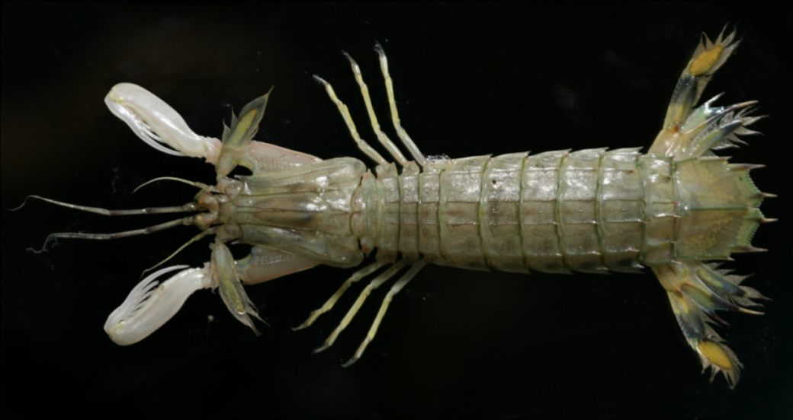
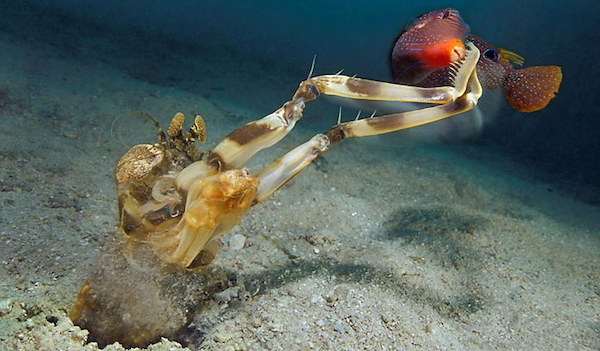
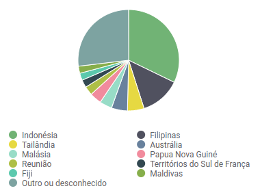
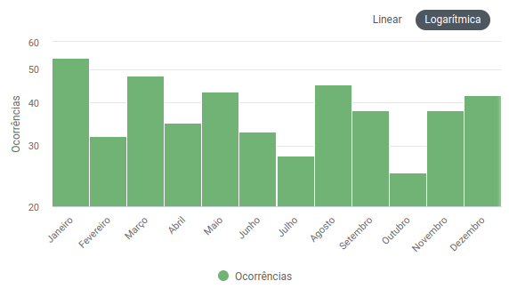
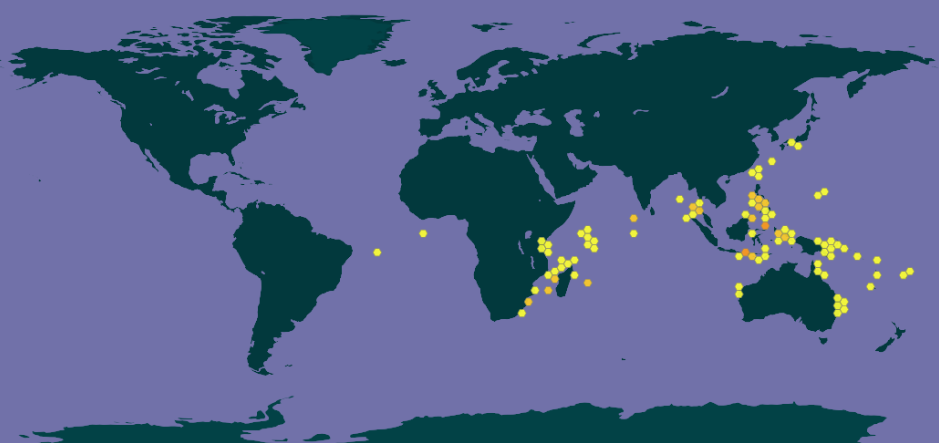

Fatos sobre o Stomatopoda

Chamados popularmente de tamarutacas ou de lacraias-do-mar no Brasil, é uma ordem de crustáceos marinhos da subclasse Hoplocarida, que agrupa cerca de 400 espécies.
Nome científico: Odontodactylus scyllarus
Taxonomia
| Reino | Animalia |
|---|---|
| Filo | Arthropoda |
| Classe | Malacostraca |
| Ordem | Stomatopoda |
| Família | Adontodactylidae |
| Gênero | Odontodactylus |
| Espécie | Odontodactylus scyllarus |
Características
Os stomatopodas, apesar de não serem muito grandes, possuindo de 15cm a 30cm, dispõem de duas patas superpoderosas na parte dianteira que, quando acionadas, são capazes de proferir um golpe com a mesma aceleração de um disparo de uma arma do calibre 22 e força de impacto de 60 kg/cm3! E isso em menos de 1/3.000 de segundo, o que significa que, se um humano pudesse acelerar os braços com 1/10 desse poder, seria possível lançar uma bola de baseball em órbita ao redor da Terra.
Essas patinhas se movem tão depressa que a água próxima a elas chega a ferver, em um fenômeno chamado supercavitação, além de provocar uma onda de choque capaz de matar a presa mesmo que a lagosta maldita erre o golpe. Assim, com esse movimento ninja, as tamarutacas assassinam outros animais, despedaçando-os, mesmo que contem com carapaças protetoras.
Caso tenha ficado curioso(a) e queira ver esse pequeno artrópode em ação, a Nat Geo WILD publicou um vídeo incrível.
Tipicamente os aquários não mantêm espécimes de mantis entre os seus animais, já que graças aos seus hábitos violentos e sanguinários, eles não curtem dividir o espaço com outros animais. Além disso, a lagosta-boxeadora é capaz de destruir os vidros dos tanques.
Explosão de cores

Os stomatopodas contam com olhos incríveis, que possuem três pontos focais cada e são capazes de enxergar do espectro ultravioleta ao infravermelho. Para que você tenha uma ideia, o olho humano contém milhões de células fotorreceptoras, entre elas os cones, que são as que nos permitem ver as cores.
Nossos olhos possuem três tipos desses receptores (que respondem à luz azul, verde e vermelha), que nos permitem perceber o espectro de cores que vemos. Os cães contam com apenas dois tipos de cones (verde e azul), e é por isso que eles vêm tons de azul, verde e um pouco de amarelo. Já as borboletas, sortudas, possuem cinco tipos de cones, o que significa que elas conseguem enxergar cores que o nosso cérebro é incapaz de processar.
Contudo, as lagostas-boxeadoras são um crustáceo tão sensacional que elas não possuem dois, três ou cinco tipos de cones apenas. Elas contam com 16! Assim, o arco-íris que elas enxergam deve ser uma verdadeira explosão termonuclear de cores, luz e beleza.
Stomatopoda: a dieta do assassino dos mares
Na verdade, apesar de não serem muito grandes, as tamarutacas são um verdadeiro pesadelo dos oceanos, sendo consideradas como um dos animais mais violentos do planeta.São predadoras letais que se alimentam de caranguejos, camarões, moluscos e peixes.
Habitat
 As lagostas-boxeadoras costumam ser encontradas próximo à costa de mares tropicais e subtropicais.
Curiosidades
- Seus membros são tão poderosos que os cientistas estão estudando a estrutura de suas células para desenvolver novas armaduras para as tropas de combate;
- A Força Aérea norte-americana “encomendou” uma pesquisa para o desenvolvimento de aeronaves militares mais resistentes com base no revestimento das patas golpeadoras do mantis;
- Existem estudos baseados na visão superpoderosa das tamarutacas para melhorar os componentes ópticos — como os dos leitores de CD e DVD, por exemplo — utilizados atualmente.
Ficou mais curioso? O pessoal do site The Oatmeal criou um infográfico superinformativo especialmente para esse crustáceo.